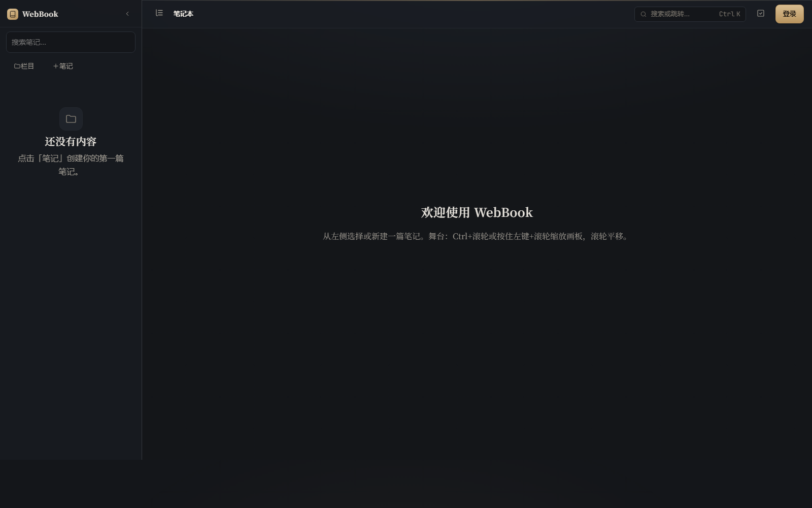
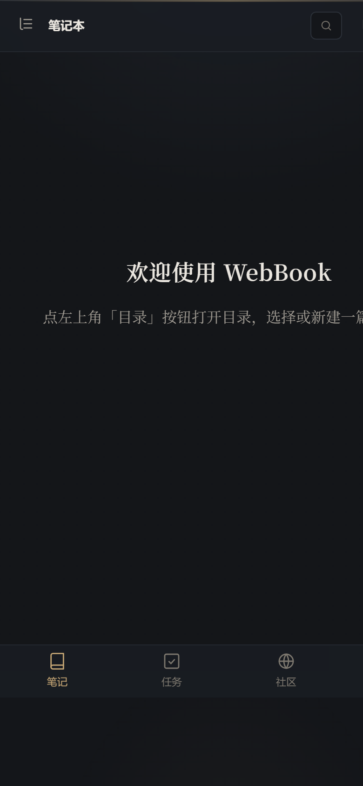

顶栏已经修好了（93a9f61），但内容区还是老样子：
第一次打开是正中央两行灰字，其余 90% 空白；侧栏、顶栏、内容三层同色，只靠发丝线分开。
这一页改的是这两件事 —— 首屏与层级。


笔记存在你自己的仓里，图片和长文自动分卷。没网也能写，登录后自动同步。
新增 一句主标题 + 可聚焦的书写条 + 3 个动作 + 右侧「快速开始 / 最近打开」 不动 舞台几何 / 块编辑器 / 目录树
现在的侧栏用 --glass-bg(62% 不透明) 叠在同色背景上，顶栏 82% —— 玻璃底下没有东西可透，结果只是同时降低了对比度却没有制造深度。改成实色分层 + 卡片顶部一道 1px 高光。
把战斗演出从「帧驱动」改成「时间轴 + 事件驱动」，编辑器侧只描述演出意图，运行时负责插值。
时间轴精度定在 1/60 秒；编辑器只存关键帧，插值曲线随轨道保存。
改动 侧栏改实色 --bg-elev、顶栏改实色、卡片加 inset 0 1px 0 rgba(255,255,255,.045) 顶部高光 不动 块与连线的数据模型
| 项 | 改动 | 收益 |
|---|---|---|
| 首屏 | 居中灰字 → 主标题 + 书写条 + 3 动作 + 右侧快速开始 | 冷启动第一眼不再空白 |
| 侧栏 | --glass-bg(62%) → 实色 --bg-elev | 玻璃底下没有内容可透，实色反而层次清楚 |
| 顶栏 | 加 nav 四项 + 分隔线；面包屑降为情境 | 去处可见 + 当前页高亮 |
| 笔记头 | 标题独占一行；元信息全部走等宽字 | 元信息「退后」，不抢标题 |
| 块 | 分层示意从「虚线画布」改成卡片内三行 | 和正文的排版语言一致 |